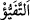
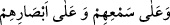
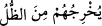
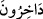

olumsuzluk mânâsı verir. Olumsuzun inkârı (reddi) da olumsuzdur. İki olumsuzdan da
bir olumlu çıkar. Âyetteki “görmek”, tefekküre götüren göz ile görmedir. Zamir, Mekke
kâfirlerine râcidir. Yâni “O Mekkeliler bakıp görmezler mi?” demektir.
“Onun gölgeleri, küçülerek ve Allah’a secde ederek sağa sola döner.” Gölge,
Allah’ın irâdesine göre bir yandan diğer yana, bir taraftan diğer tarafa döner. Çünkü
onun dönüşü tamâmen teslimiyete bağlıdır.
Tehzîbü’l-masâdır’da der ki: “
et-Tefeyyü” gündüzün yarısı geçtikten sonra
gölgenin ortaya çıkması demektir. Bu da ancak zeval ile akşam arası olur.”
el-İrşâd’da der ki: “Herhalde “Allah’ın yarattığı şeyler” ile kasdedilen dağ, ağaç ve
taşlar gibi sâdece güneşin yükselip alçalmasıyla gölgeleri oluşan cansız mahlûkat
olmalıdır. Hayvanlara gelince onların gölgesi hareketleriyle meydana gelir.”
et-Tibyân’da da şöyle der: “Bunlar ağaç, ot ve gölgesi olup ayakta duran her şeydir.”
“Sağa sola döner” demek; ‘Onlar, gölgeleri sağa ve sola, sâdece bir yöne veya her iki
yöne doğru olan Allah’ın yarattığı şeyleri görmediler mi?’ demektir.
et-Tibyân’da der ki: “Gündüzün başında sağ taraftan, sonunda sol taraftan” demektir.
Yâni sen yönünü kıbleye doğru çevirdiğinde, senin bir yönden diğer yöne demektir. Bu,
bir şeyin iki yanı için insanın sağından ve solundan istiâredir.
Âyette “el-yemîn (sağ)” kelimesinin tek, “eş-şemâil (sollar)” kelimesinin çoğul
olarak kullanılması, Arapların bir şeyde iki alâmet birleşirse birbirini kaldırıp
diğeriyle iktifâ etmelerinden ileri gelmektedir. Nitekim şu âyetlerde de durum böyledir:
“
Kulaklarına ve gözlerine (mühür vurdu)” (el-Bakara, 2/7); “
Onları karanlıktan aydınlığa çıkarır.” (el-Bakara, 2/257) el-Es’iletü’l-
mukhime’de böyle geçmektedir.
Âyetin işârî tefsîri ise şöyledir: Allah’ın yarattığı şeyler iki kısımdır. Biri, halk âlemi
gibi bir şeyden yaratılanlardır ki bunlar cisimler âlemidir. İkincisi, emr âlemi gibi
hiçbir şey olmaksızın yaratılanlardır ki bunlar ruhlar âlemidir. Nitekim Allah Teâlâ:
“Dikkat edin, yaratma ve emir O’nundur.” (el-A‘raf, 7/54) buyurmuştur. Ruhlar
âleminin ‘emr âlemi’ diye isimlendirilmesinin sebebi, onu “Ol” emriyle hiçbir şeyden
olmaksızın zamansız olarak yaratmasıdır. Nitekim Allah Teâlâ: “Daha önce sen hiçbir
şey değilken seni yarattım.” (Meryem, 19/9) buyurmuştur. Yâni, Senin rûhunu cesedini
yaratmadan önce yaratmıştım, demektir. Yine Rasûlullah (s.a.)’in: “Allah ruhları
cesedleri yaratmadan iki bin sene önce yarattı.”[154] hadîsi de bunu ifâde eder. et-
Te’vîlâtü’n-Necmiyye’de böyle geçmektedir.
“Allah’a secde ederek” bu gölgeler Allah’ın kendisine musahhar kıldığı dönüp
toplanma emrine imtina göstermeksizin Allah’a secde ederek; uzama, kısalma ve
benzeri durumlarda Allah’ın murâdına göre dönerek, demektir.
“Küçülerek” “__WORD__ kelimesinin çoğul olarak gelişi mânâ itibarıyladır. Çünkü